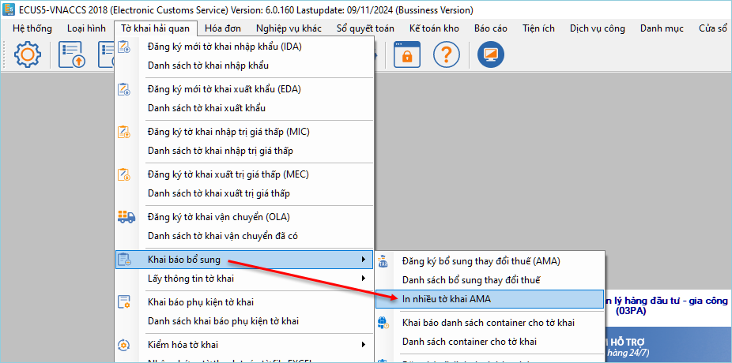
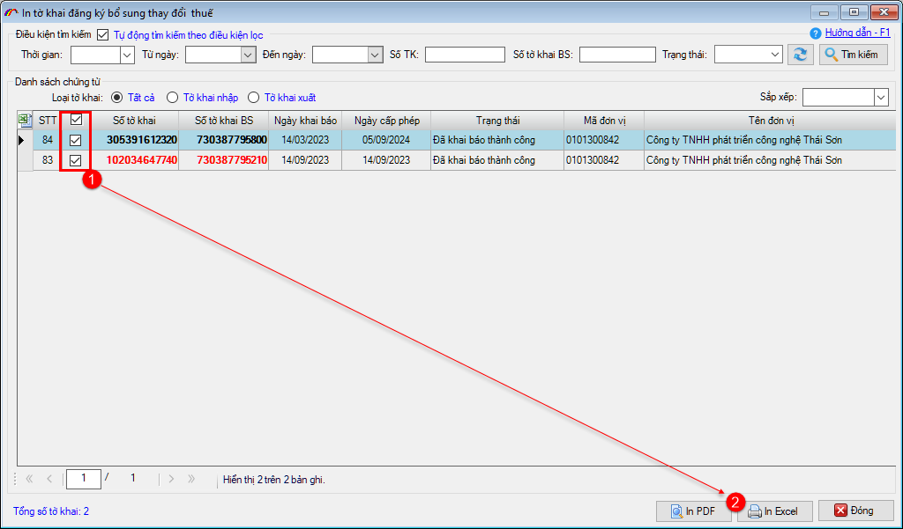
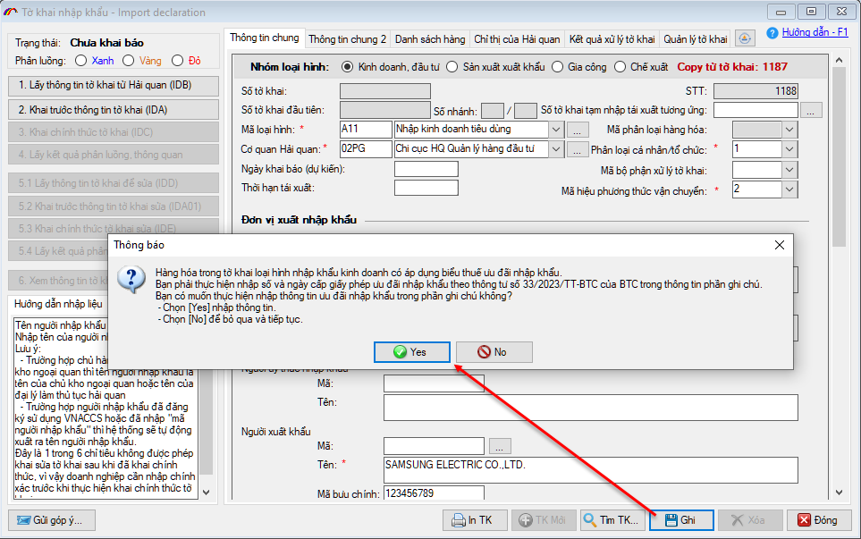

NHỮNG THAY ĐỔI TRÊN BẢN ECUS5VNACCS 2018
(Phiên bản update 09/11/2024)
Phần mềm ECUS5VNACCS2018 - Ngày phát hành 20/11/2024 | Version 6.0.160 | Lastupdate 09/11/2024 | Phiên bản CSDL 297
Phiên bản cập nhật ngày 09/11/2024 được phát hành ngày 20/11/2024 sửa đổi bổ sung một số chức năng, nhằm tăng hiệu suất phần mềm. Các chức năng được sửa đổi, bổ sung cụ thể như phần chi tiết dưới đây:
- 1. Bổ sung chức năng in nhiều tờ khai AMA.
Phần mềm bổ sung thêm chức năng cho phép doanh nghiệp thực hiện việc in nhiều tờ khai AMA bằng cách truy cập vào menu Tờ khai hải quan / Khai báo bổ sung / In nhiều tờ khai AMA.

Màn hình chức năng in nhiều tờ khai AMA như sau, bạn chỉ cần đánh dấu tích chọn vào các tờ khai cần in. Sau đó chọn in ra PDF hoặc Excel.

- 2. Hiển thị cảnh báo yêu cầu nhập số và ngày cấp CO vào mục ghi chú.
Hiện nay, cục Hải quan TP.HCM (đầu mã Hải quan 02, ví dụ 02PG) yêu cầu người khai nhập số và ngày cấp CO (giấy phép ưu đãi nhập khẩu) vào chỉ tiêu Ghi chú trên tờ khai, đối với tờ khai có mã loại hình A11, A12, A41 và mã biểu thuế nhập khẩu là: B04, B05, B06, B07, B08, B09, B10, B11, B12, B13, B17, B18, B19, B20, B21, B22, B23, B24, B25, B26, B27. Việc áp dụng này theo quy định tại thông tư 33/2023/TT-BTC.
Vì vậy, nếu tờ khai nhập khẩu của doanh nghiệp có:
- -Mã hải quan: thuộc cục Hải quan TP.HCM, đầu 02 (ví dụ 02PG) và
- -Mã loại hình: A11, A12 hoặc A41 và
- -Mã biểu thuế nhập khẩu: B04, B05, B06, B07, B08, B09, B10, B11, B12, B13, B17, B18, B19, B20, B21, B22, B23, B24, B25, B26, B27
Thì khi GHI thông tin tờ khai, phần mềm sẽ hiện thông báo cảnh báo nhắc nhở như sau:

- 3. Cùng nhiều chức năng, tiện ích khác nhằm nâng cao hiệu suất chương trình...
Bản quyền © thuộc về Công ty TNHH Phát triển công nghệ Thái Sơn